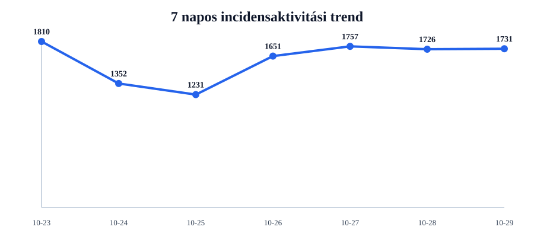
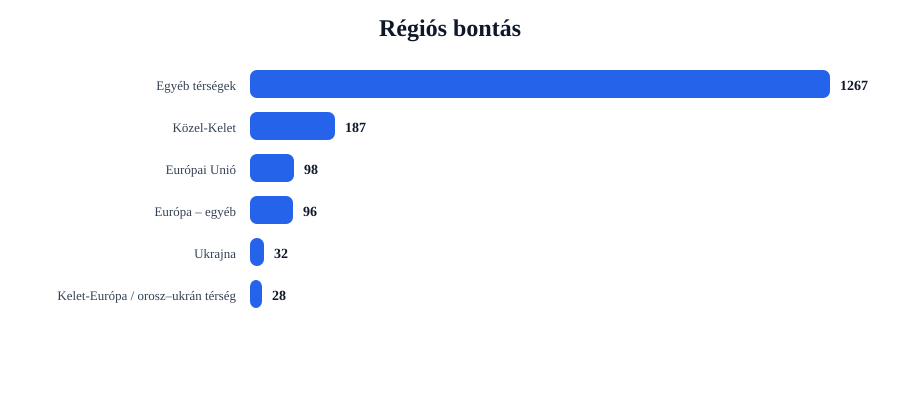
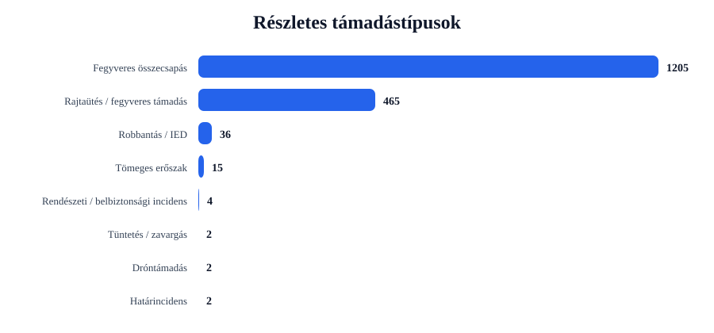
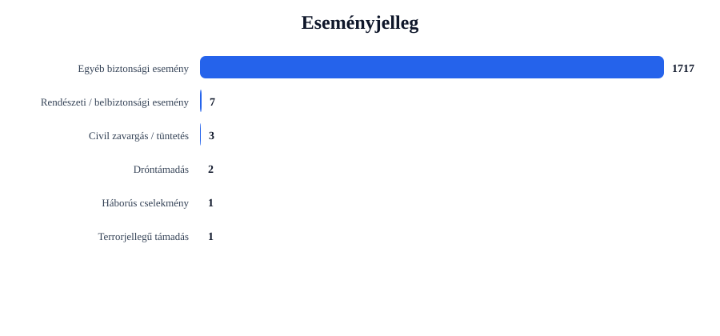

Rövid napi értékelés
Az incidensek száma emelkedett: +5 esemény, 0.3% növekedés.
A legtöbb találat ehhez az országhoz kapcsolódott: United States (601 esemény).
A legerősebb regionális súlypont: Egyéb térségek (1267 esemény).
A leggyakoribb részletes támadástípus: Fegyveres összecsapás (1205 találat).
A leggyakoribb eseményjelleg: Egyéb biztonsági esemény (1717 találat).
A drón-, terrorjellegű és háborús események felismerése kulcsszavas besorolással történik. Ez jó elemzési szűrő, de kézi ellenőrzést továbbra is igényelhet.
Régiós helyzetkép
Európai Unió
Azonosított események száma: 98. Leginkább érintett országok: Spain (16), Germany (10), Ireland (10).
Domináns támadástípusok: Fegyveres összecsapás (69), Rajtaütés / fegyveres támadás (28), Robbantás / IED (1). Domináns eseményjelleg: Egyéb biztonsági esemény (97), Terrorjellegű támadás (1).
| Cím | Ország | Helyszín | Részletes típus | Eseményjelleg | Forrás |
|---|---|---|---|---|---|
| fight – Hannover, Niedersachsen, Germany | Germany | Hannover, Niedersachsen, Germany | Robbantás / IED | Terrorjellegű támadás | themunicheye.com |
| fight – Madrid, Madrid, Spain | Spain | Madrid, Madrid, Spain | Fegyveres összecsapás | Egyéb biztonsági esemény | www.riotimesonline.com |
| fight – Germany | Germany | Germany | Fegyveres összecsapás | Egyéb biztonsági esemény | www.myspiritfm.com |
| fight – Italy | Italy | Italy | Fegyveres összecsapás | Egyéb biztonsági esemény | www.myspiritfm.com |
| fight – Berlin, Berlin, Germany | Germany | Berlin, Berlin, Germany | Fegyveres összecsapás | Egyéb biztonsági esemény | www.algemeiner.com |
Ukrajna
Azonosított események száma: 32. Leginkább érintett országok: Ukraine (32).
Domináns támadástípusok: Robbantás / IED (25), Fegyveres összecsapás (4), Rajtaütés / fegyveres támadás (3). Domináns eseményjelleg: Egyéb biztonsági esemény (32).
| Cím | Ország | Helyszín | Részletes típus | Eseményjelleg | Forrás |
|---|---|---|---|---|---|
| fight – Kharkiv, Kharkivs'ka Oblast', Ukraine | Ukraine | Kharkiv, Kharkivs'ka Oblast', Ukraine | Robbantás / IED | Egyéb biztonsági esemény | www.theepochtimes.com |
| fight – Kherson, Khersons'ka Oblast', Ukraine | Ukraine | Kherson, Khersons'ka Oblast', Ukraine | Robbantás / IED | Egyéb biztonsági esemény | www.independent.co.uk |
| fight – Kremenchuk, Poltavs'ka Oblast', Ukraine | Ukraine | Kremenchuk, Poltavs'ka Oblast', Ukraine | Robbantás / IED | Egyéb biztonsági esemény | www.arabnews.com |
| assault – Chernihiv, Chernihivs'ka Oblast', Ukraine | Ukraine | Chernihiv, Chernihivs'ka Oblast', Ukraine | Robbantás / IED | Egyéb biztonsági esemény | www.internazionale.it |
| fight – Chernihiv, Chernihivs'ka Oblast', Ukraine | Ukraine | Chernihiv, Chernihivs'ka Oblast', Ukraine | Robbantás / IED | Egyéb biztonsági esemény | localnews8.com |
Balkán
Azonosított események száma: 23. Leginkább érintett országok: Turkey (9), Serbia (4), Bosnia-Herzegovina (4).
Domináns támadástípusok: Fegyveres összecsapás (18), Rajtaütés / fegyveres támadás (5). Domináns eseményjelleg: Egyéb biztonsági esemény (23).
| Cím | Ország | Helyszín | Részletes típus | Eseményjelleg | Forrás |
|---|---|---|---|---|---|
| fight – Turkey | Turkey | Turkey | Fegyveres összecsapás | Egyéb biztonsági esemény | nypost.com |
| assault – Turkey | Turkey | Turkey | Rajtaütés / fegyveres támadás | Egyéb biztonsági esemény | www.standardmedia.co.ke |
| fight – Belgrade, Serbia (general), | Serbia (general) | Belgrade, Serbia (general), | Fegyveres összecsapás | Egyéb biztonsági esemény | www.breitbart.com |
| fight – Serbia | Serbia | Serbia | Fegyveres összecsapás | Egyéb biztonsági esemény | www.independent.co.uk |
| fight – Ankara, Ankara, Turkey | Turkey | Ankara, Ankara, Turkey | Fegyveres összecsapás | Egyéb biztonsági esemény | www.dailysabah.com |
Közel-Kelet
Azonosított események száma: 187. Leginkább érintett országok: Iran (23), Israel (21), Pakistan (20).
Domináns támadástípusok: Fegyveres összecsapás (130), Rajtaütés / fegyveres támadás (43), Tömeges erőszak (12). Domináns eseményjelleg: Egyéb biztonsági esemény (184), Civil zavargás / tüntetés (3).
| Cím | Ország | Helyszín | Részletes típus | Eseményjelleg | Forrás |
|---|---|---|---|---|---|
| assault – Gaza, Israel (general), Israel | Israel | Gaza, Israel (general), Israel | Rajtaütés / fegyveres támadás | Egyéb biztonsági esemény | kfgo.com |
| assault – Israel | Israel | Israel | Rajtaütés / fegyveres támadás | Egyéb biztonsági esemény | news.crossmap.com |
| fight – Israel | Israel | Israel | Fegyveres összecsapás | Egyéb biztonsági esemény | freebeacon.com |
| fight – Tehran, Tehran, Iran | Iran | Tehran, Tehran, Iran | Fegyveres összecsapás | Egyéb biztonsági esemény | www.breitbart.com |
| fight – Riyadh, Ar Riya?, Saudi Arabia | Saudi Arabia | Riyadh, Ar Riya?, Saudi Arabia | Fegyveres összecsapás | Egyéb biztonsági esemény | tradearabia.com:443 |
Kelet-Európa / orosz–ukrán térség
Azonosított események száma: 28. Leginkább érintett országok: Russia (26), Moldova (1), Belarus (1).
Domináns támadástípusok: Fegyveres összecsapás (13), Robbantás / IED (10), Rajtaütés / fegyveres támadás (5). Domináns eseményjelleg: Egyéb biztonsági esemény (28).
| Cím | Ország | Helyszín | Részletes típus | Eseményjelleg | Forrás |
|---|---|---|---|---|---|
| fight – Volgograd, Volgogradskaya Oblast', Russia | Russia | Volgograd, Volgogradskaya Oblast', Russia | Robbantás / IED | Egyéb biztonsági esemény | www.dailykos.com |
| fight – Stalingrad, Volgogradskaya Oblast', Russia | Russia | Stalingrad, Volgogradskaya Oblast', Russia | Robbantás / IED | Egyéb biztonsági esemény | patriotpost.us |
| fight – Kaliningrad, Kaliningradskaya Oblast', Russia | Russia | Kaliningrad, Kaliningradskaya Oblast', Russia | Robbantás / IED | Egyéb biztonsági esemény | www.dailystar.co.uk |
| fight – Ryazan, Ryazanskaya Oblast', Russia | Russia | Ryazan, Ryazanskaya Oblast', Russia | Robbantás / IED | Egyéb biztonsági esemény | www.business-standard.com |
| fight – Kursk, Kurskaya Oblast', Russia | Russia | Kursk, Kurskaya Oblast', Russia | Robbantás / IED | Egyéb biztonsági esemény | warontherocks.com |
Európa – egyéb
Azonosított események száma: 96. Leginkább érintett országok: United Kingdom (79), Switzerland (6), Oceans (4).
Domináns támadástípusok: Fegyveres összecsapás (77), Rajtaütés / fegyveres támadás (19). Domináns eseményjelleg: Egyéb biztonsági esemény (96).
| Cím | Ország | Helyszín | Részletes típus | Eseményjelleg | Forrás |
|---|---|---|---|---|---|
| fight – London, London, City of, United Kingdom | United Kingdom | London, London, City of, United Kingdom | Fegyveres összecsapás | Egyéb biztonsági esemény | collider.com |
| assault – London, London, City of, United Kingdom | United Kingdom | London, London, City of, United Kingdom | Rajtaütés / fegyveres támadás | Egyéb biztonsági esemény | londonlovesbusiness.com |
| assault – United Kingdom | United Kingdom | United Kingdom | Rajtaütés / fegyveres támadás | Egyéb biztonsági esemény | timesofindia.indiatimes.com |
| fight – United Kingdom | United Kingdom | United Kingdom | Fegyveres összecsapás | Egyéb biztonsági esemény | www.indianlink.com.au |
| fight – Switzerland | Switzerland | Switzerland | Fegyveres összecsapás | Egyéb biztonsági esemény | www.theoaklandpress.com |
Egyéb térségek
Azonosított események száma: 1267. Leginkább érintett országok: United States (601), India (105), Nigeria (65).
Domináns támadástípusok: Fegyveres összecsapás (894), Rajtaütés / fegyveres támadás (362), Rendészeti / belbiztonsági incidens (4). Domináns eseményjelleg: Egyéb biztonsági esemény (1257), Rendészeti / belbiztonsági esemény (7), Dróntámadás (2).
| Cím | Ország | Helyszín | Részletes típus | Eseményjelleg | Forrás |
|---|---|---|---|---|---|
| fight – Guasave, Sinaloa, Mexico | Mexico | Guasave, Sinaloa, Mexico | Dróntámadás | Dróntámadás | www.riotimesonline.com |
| fight – Battle Lake, Minnesota, United States | United States | Battle Lake, Minnesota, United States | Fegyveres összecsapás | Háborús cselekmény | www.perhamfocus.com |
| fight – El Centro, Aguascalientes, Mexico | Mexico | El Centro, Aguascalientes, Mexico | Dróntámadás | Dróntámadás | www.canoncitydailyrecord.com |
| fight – Arizona, United States | United States | Arizona, United States | Fegyveres összecsapás | Egyéb biztonsági esemény | missionlocal.org |
| fight – Argentina | Argentina | Argentina | Fegyveres összecsapás | Egyéb biztonsági esemény | www.npr.org |
Grafikonos áttekintés




Top 5 kiemelt esemény
| # | Cím | Ország | Helyszín | Részletes típus | Eseményjelleg | Súly | Forrás |
|---|---|---|---|---|---|---|---|
| 1 | fight – Hannover, Niedersachsen, Germany | Germany | Hannover, Niedersachsen, Germany | Robbantás / IED | Terrorjellegű támadás | 26 | themunicheye.com |
| 2 | fight – Kharkiv, Kharkivs'ka Oblast', Ukraine | Ukraine | Kharkiv, Kharkivs'ka Oblast', Ukraine | Robbantás / IED | Egyéb biztonsági esemény | 21 | www.theepochtimes.com |
| 3 | fight – Kherson, Khersons'ka Oblast', Ukraine | Ukraine | Kherson, Khersons'ka Oblast', Ukraine | Robbantás / IED | Egyéb biztonsági esemény | 21 | www.independent.co.uk |
| 4 | fight – Kremenchuk, Poltavs'ka Oblast', Ukraine | Ukraine | Kremenchuk, Poltavs'ka Oblast', Ukraine | Robbantás / IED | Egyéb biztonsági esemény | 20 | www.arabnews.com |
| 5 | assault – Chernihiv, Chernihivs'ka Oblast', Ukraine | Ukraine | Chernihiv, Chernihivs'ka Oblast', Ukraine | Robbantás / IED | Egyéb biztonsági esemény | 20 | www.internazionale.it |
Napi bontások
Régiók
- Egyéb térségek1267
- Közel-Kelet187
- Európai Unió98
- Európa – egyéb96
- Ukrajna32
- Kelet-Európa / orosz–ukrán térség28
- Balkán23
Országok
- United States601
- India105
- United Kingdom79
- Nigeria65
- Pakistan42
- Australia34
- Canada32
- Ukraine32
- South Africa29
- Russia26
Részletes típusok
- Fegyveres összecsapás1205
- Rajtaütés / fegyveres támadás465
- Robbantás / IED36
- Tömeges erőszak15
- Rendészeti / belbiztonsági incidens4
- Tüntetés / zavargás2
- Dróntámadás2
- Határincidens2
Eseményjelleg
- Egyéb biztonsági esemény1717
- Rendészeti / belbiztonsági esemény7
- Civil zavargás / tüntetés3
- Dróntámadás2
- Háborús cselekmény1
- Terrorjellegű támadás1
Források
- timesofindia.indiatimes.com46
- www.dailymail.com35
- www.riotimesonline.com34
- nypost.com29
- www.hindustantimes.com28
- www.winnipegfreepress.com27
- www.independent.co.uk25
- www.aljazeera.com25
- allafrica.com24
- www.thehindu.com24
Blogra használható intelligence card
Módszertani megjegyzés
Ez a jelentés nyílt forrású, automatizált adatgyűjtés alapján készül. A dróntámadások, terrorjellegű események és háborús cselekmények azonosítása kulcsszavas besorolással történik. Ez elemzési támpont, nem hivatalos minősítés.